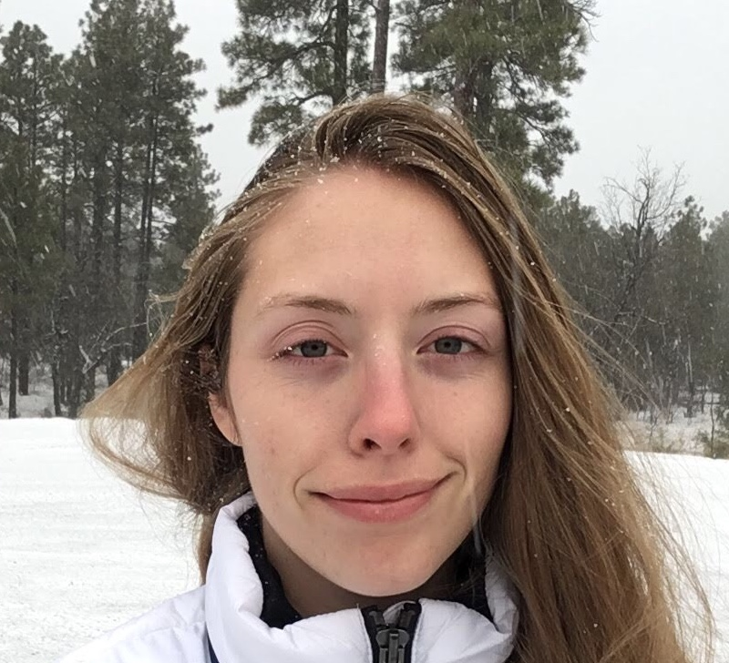

Hello, I'm Steffi. I was named after the tennis player Steffi Graf. I have had quite a few harsh and unexpected life experiences. These experiences make me a more resilient and patient person.
Originally I was born in Kokomo, Indiana. Soon after I was born my parents divorced and my mother, sister, brother and I moved to Santa Barbara, California. I lived on and off at my grandmother's orchard until I was 10 at which point, my grandmother's livelihood went down the creek and my grandmother relocated us to Tucson, Arizona. I had been homeless, poverty stricken, lost everything I had, and struggled with a great many things living in California. I have resided in Tucson ever since. Life did not get easier for me there.
I attended a middle school/highschool here in Tucson called Sonoran Science Academy. A small school where my graduating class was the largest the school had ever seen at a whopping 60 students. I met my husband in middle school. We have been together for 6 years now and have a 4 year old son.
I attended the University of Arizona studying Veterinary Science and Biomedical Engineering until I became pregnant with my son. I have attended Pima Community College since then and I am close to an Associates degree and Bachelors degree at this point. My life's goal is to be a Veterinarian.
My work experience begins at the age of 11 in the field of scientific research. I have worked at the U of A Animal Sciences Department, U of A Systematic Bioengineering Laboratory, Petsmart, Ace Hardware, Bed Bath and Beyond, Personal Assistant to a Pet Psychic, Chocolateer, Safeway, Amazon, and Rev. Currently I work for MiTek Sales Simplicity Homebuilder Software and I have been Assistant Chef to Personal Chef Maggie for eight years.